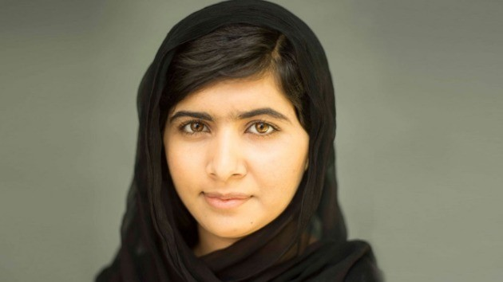

Malala Conhecida internacionalmente pelo seu empenho para que mulheres e crianças paquistanesas recebam educação, mesmo sendo algo contra as ordens do regime talibã. Malala Yousafzai recebeu o Prêmio Nobel da Paz quando tinha apenas 17 anos, em 2014. O seu ativismo começou muito cedo, com apenas 11 anos de idade já escrevia relatos sobre a ocupação talibã, sendo que aos 15 anos sofreu um ataque devido às suas ações ativistas.